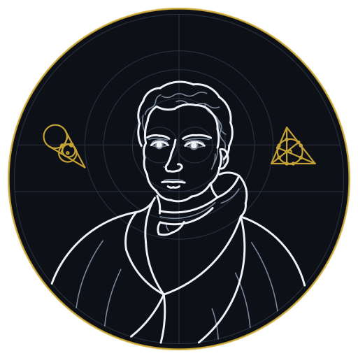

Karl Wilhelm Feuerbach¶

The works of Karl Wilhelm Feuerbach (1800–1834) transformed triangle geometry, discovering the nine-point circle and establishing its fourfold tangency with the incircle and excircles. Within the interconnected GEOMETOR semantic digital archive, Feuerbach’s 1822 monograph is liberated from static print bounds—decomposed into addressable semantic units, calibrated vector diagrams, primary-source folio provenance, and cross-corpus citations speaking one shared geometric language.
Properties of Remarkable Points of the Rectilinear Triangle
Feuerbach’s 1822 Nuremberg monograph discovering the nine-point circle, proving its fourfold tangency with the incircle and excircles of every triangle, and formulating the orthic inradius.
Usage
This archive is built with PHOTON Publish as an interconnected semantic book codex.
Bibliography
Every inline :cite: reference across the Euler (1765/1767) and Feuerbach (1822) codices links directly to its entry below.
Cross-Treatise Concordance
Because Leonhard Euler (1765/1767) and Karl Wilhelm Feuerbach (1822) wrote prior to modern standardized notation—and crucially reused letters such as \(G\), \(O\), and \(r\) with different meanings—this concordance maps every center, circle, invariant, and theorem across the historical editions and the GEOMETOR ecosystem.
Technical Glossary
Every inline :term: role links directly to its entry below.
Changelog
2026-11-15
About
Karl Wilhelm Feuerbach presents in a complete, synchronized 4-track Digital Scriptorium edition the foundational 1822 Nuremberg monograph: Karl Wilhelm Feuerbach’s Eigenschaften einiger merkwürdigen Punkte des geradlinigen Dreiecks (Nürnberg: Riegel und Wießner, 1822, with Karl Buzengeiger’s Vorrede). Feuerbach’s treatise discovered the Nine-Point Circle centered at \(X(5)\), introduced the orthic inradius \(\rho = 2R\cos\alpha\cos\beta\cos\gamma\), proved the celebrated fourfold tangency theorem (§ 57) at the Feuerbach Point \(X(11)\) and the three excircles, and established nine pure synthetic Euclidean propositions.
Exact Symbolic Demonstrations
Unlike floating-point dynamic geometry sketches, every theorem in Euler (1765) and Feuerbach (1822) is executed and verified symbolically in geometor.feuerbach with zero floating-point approximations.
Research & Editorial Log
Transcribed and translated Leonhard Euler’s Solutio facilis problematum quorumdam geometricorum difficillimorum (E325, 1765/1767, §§ 1–34, pp. 103–123) and Karl Wilhelm Feuerbach’s Eigenschaften einiger merkwürdigen Punkte des geradlinigen Dreiecks (1822, Vorrede pp. I–XVI, §§ 1–87, and synthetic Euclidean Anhang 1.–9. Satz, pp. 56–62) directly from archival scans.
Modules
Exact symbolic constructions, polynomial proofs, and codex concordance for Euler (1765) and Feuerbach (1822).